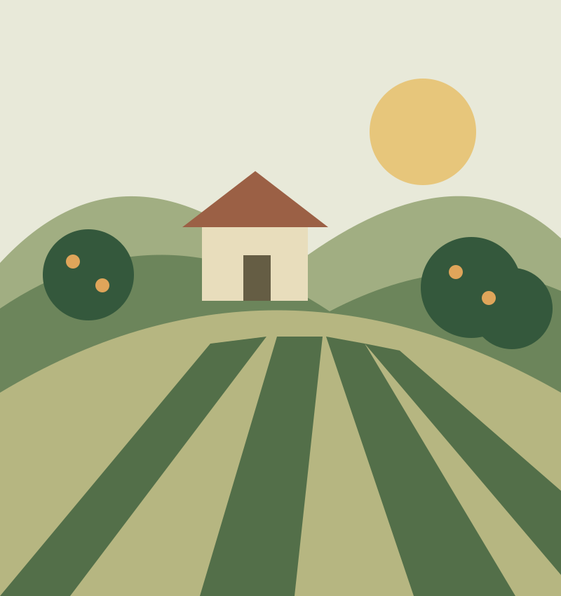

자연의 속도로 자라난, 정직한 맛.OUR LITTLE PROMISE
과일이 오는 길은 짧게,
마음은 오래도록.
좋은 과일을 매일 부담 없이 먹을 수는 없을까?
이팜은 그 작은 바람에서 시작합니다.
산지에서 제철 과일을 고르고, 이웃의 주문을 모아
불필요한 유통과 배송 비용을 줄이는 것을 지향합니다.
최소 마진으로, 우리 동네 식탁에 가까이 다가가겠습니다.
01 / SELECT
산지에서 꼼꼼하게
맛있는 시기에 선별한 제철 과일
02 / TOGETHER
이웃과 합리적으로
함께 주문해 줄이는 구매 부담
03 / DELIVER
집 앞까지 신선하게
상품별 일정에 맞춰 준비하는 배송